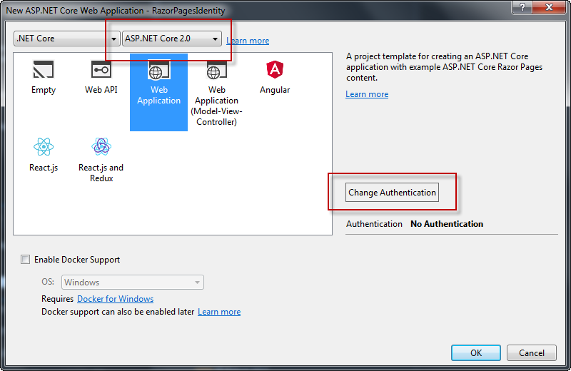
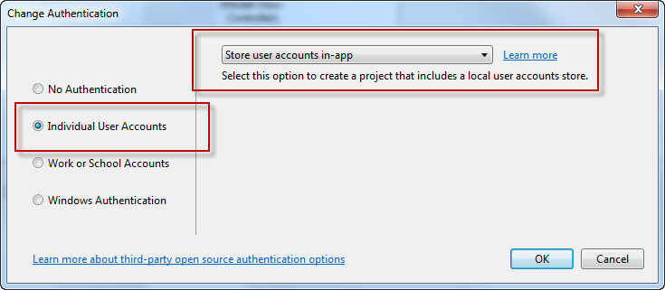
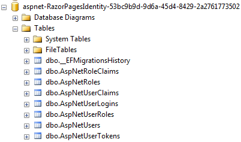
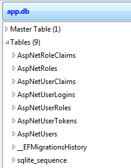
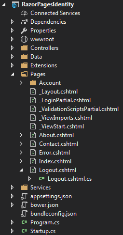

Razor Pages uses ASP.NET Identity as its default membership and authentication system. In this section you will explore the various parts of ASP.NET Identity as it relates to Razor Pages, starting with an overview of the files generated as part of the project templates.
If you are using Visual Studio, you can specify that your Razor Pages project uses an authentication system at the point where you specify the type of project to create.

Click the Change Authentication button and then specify that you wish to use Individual user accounts and that you wish to store the user data in your own database:

Having created the project, build it to ensure that all required packages are restored.
If you prefer to use the command line tools to generate the template files, navigate to the folder that you want to use for the project and use the following command:
dotnet new razor --auth individual
The main difference between the two approaches to project creation is that the Visual Studio template results in an application that uses Sql Server localdb as a datastore, whereas the command line option uses the cross-platform SQLite database.
ASP.NET Identity uses Entity Framework Core for data access. EF Core uses migrations to keep the database in sync with the model. The first migration is already scripted and generates the schema for ASP.NET Identity. The SQLite version has the first migration already applied, so you will find a file named app.db in the project root. You need to run the update-database command to execute the first migration if you are using the Visual Studio template. In both cases the schema of the database is the same:
 
Project Overview
The project includes a number of folders and files over and above those found in a standard template:

The Data folder contains the files required by Entity Framework Core, including the migrations and DbContext class.
The Services folder contains and interface for an EmailSender class, and an implementation that has one non-operational method, SendEmailAsync. You need to provide your own implementation if you plan to use this class.
The Extensions folder contains a couple of useful extension methods that are used for creating confirmation links in emails and for determining the correct URL to redirect to where necessary.
The Account folder within the Pages folder contains a number of Razor Page files designed for managing the most common authentication-related tasks and serve as a reasonable starting point.
Finally, the Controllers folder contains code for an MVC controller - AccountController, which has been included to cater for logging out. It has one action method - Logout, which signs the user out, logs the action and then redirects to the home page. Use of an MVC controller for this process is deliberate - since the logging out process has no associated UI, it was considered unnecessary to use a Razor Page, whose purpose afterall is to generate a UI.
Changing the Logout controller to a Razor page
If you prefer not to have MVC controllers in your application for any reason, you can change the logging out process to use a Razor Page instead:
- Add a new Razor page called Logout.cshtml to the Pages folder.
- Add
Layout = null;to the code block in the .cshtml file - Change the code in the
LogoutModelfile to the following:using Microsoft.AspNetCore.Identity; using Microsoft.AspNetCore.Mvc; using Microsoft.AspNetCore.Mvc.RazorPages; using Microsoft.Extensions.Logging; using RazorPagesIdentity.Data; using System.Threading.Tasks; namespace RazorPagesIdentity.Pages { public class LogoutModel : PageModel { private readonly SignInManager<ApplicationUser> _signInManager; private readonly ILogger _logger; public LogoutModel(SignInManager<ApplicationUser> signInManager, ILogger<LogoutModel> logger) { _signInManager = signInManager; _logger = logger; } public async Task<IActionResult> OnPost() { await _signInManager.SignOutAsync(); _logger.LogInformation("User logged out."); return RedirectToPage("/Index"); } } } - Open the LoginPartial.cshtml file. Remove the following attributes from the form tag helper:
asp-controller="Account" asp-action="Logout" method="post" - Replace them with an
asp-pageattribute as follows:
The opening tag should now look like this:asp-page="Logout"<form asp-page="Logout" id="logoutForm" class="navbar-right">
It is now safe to delete the Controllers folder and all of its contents, but before you do, it is worth taking a look at the content of the AccountController and comparing it with the LogoutModel class file content. They are almost identical.